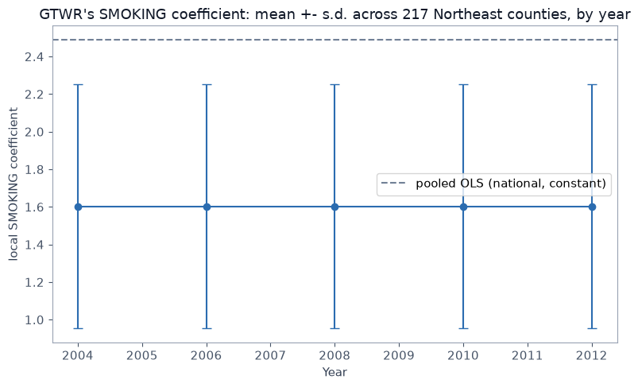

Pooled OLS vs. a hand-built two-way fixed-effects panel model vs. GTWR, plus a newly verified GTWR bug: two of its time-related parameters barely affect the fit on real data. This notebook is Part 9, Spatio-Temporal Analysis (Chapter 9.6 of 7). The worked example uses data_1998_2010_long_lbc.csv (pooled OLS and fixed effects, full 46,605-row panel); Northeast x 5 years for GTWR. The methods come from geolattice.spatial_statistics.regression.OLS and geolattice.spatial_statistics.gwmodel.spatiotemporal.GTWR are both real library calls; the fixed-effects panel model is hand-built (no geolattice.spatial_statistics panel regression exists).
Overview
This chapter closes the loop on this Part’s regression content with three genuinely different ways of handling a variable observed across both counties and years: assume the relationship is the same everywhere and always (pooled OLS), strip out everything county-specific and year-specific and look only at what is left (fixed effects), or let the relationship vary smoothly and locally across both space and time at once (GTWR, already used in Part 6).
Step
What we do
Library status
Pooled OLS
One national relationship between RATE and its covariates
✅ Library-supported
Two-way fixed effects
Demean by county and year, then OLS on what remains
🔨 Hand-built: no geolattice.spatial_statistics panel regression exists
GTWR
Meant to fit coefficients that vary continuously in space and time together
✅ Library-supported call, but: see next row
A new finding
bandwidth_t is unused dead code, and lambda_=0.5 (the class’s own example) leaves the fit functionally time-blind on real data
🐛 Verified directly, not assumed
A known limitation
GTWR.score()’s default R² inherits the same predict() bug Part 6 found
Reconfirmed directly, not re-derived from scratch
API overview
- OLS
- GTWR
Setup
Locate the repository root, import the spatial-statistics helpers, and point DATA at the example files.
Installation. This notebook needs installation option 3 (core, spatial analysis and spatial statistics): pip install "geolattice[statistics]". See “Installation options” in the GeoLattice README.
Code
import sysimport timefrom pathlib import Pathimport numpy as npimport pandas as pdimport geopandas as gpdimport matplotlib.pyplot as pltROOT = Path.cwd().resolve()for candidate in [ROOT, *ROOT.parents]:if (candidate /"pyproject.toml").is_file() and (candidate /"Data").is_dir(): ROOT = candidatebreakelse:raiseFileNotFoundError("Could not find the GeoLattice repository root.")sys.path.insert(0, str(ROOT))DATA = ROOT /"Data"/"00_shared"/"data_spatial_stat"import geolattice.spatial_statisticsfrom geolattice.viz import apply_map_stylefrom geolattice.spatial_statistics.regression import OLSfrom geolattice.spatial_statistics.gwmodel.spatiotemporal import GTWRapply_map_style()COLORS = {"blue": "#2b6cb0", "red": "#c0392b", "green": "#2f855a", "orange": "#dd6b20","grey": "#718096", "purple": "#6b46c1", "teal": "#2c7a7b"}panel = pd.read_csv(DATA /"data_1998_2010_long_lbc.csv")covariates = ["SMOKING", "POVERTY", "PM25", "NO2", "SO2"]print(f"geolattice.spatial_statistics : version {geolattice.spatial_statistics.__version__}")print(f"panel: {panel.shape}")
geolattice.spatial_statistics : version 0.3.49
panel: (46605, 10)
Pooled OLS: One Relationship, Nationwide
The simplest possible treatment of the panel: ignore the county/year structure entirely and fit one national OLS on all 46,605 rows at once.
Code
pooled = OLS(panel["RATE"], panel[covariates])print(pooled.coef_frame().round(4))print(f"\nR2: {pooled.r2:.4f}")
Not a geolattice.spatial_statistics function. A standard two-way fixed-effects panel model removes every time-invariant county characteristic (rural vs. urban, historical industry, anything not in the covariate list) and every nationwide year-specific shock (a policy change, a recession) by demeaning: subtract each county’s own 15-year mean, subtract each year’s own national mean, add back the grand mean, then run OLS on what remains : purely the within-county, year-to-year co-movement between the covariates and RATE.
Why the Coefficients Flip: Between vs. Within Variation
Side by side, the two models tell strikingly different stories about the same covariates.
Code
comparison = pd.DataFrame({"pooled OLS": pooled.coef_frame().set_index("variable")["coef"],"two-way FE (within)": fe_model.coef_frame().set_index("variable")["coef"],}).dropna()comparison["sign flip"] = np.sign(comparison["pooled OLS"]) != np.sign(comparison["two-way FE (within)"])comparison.round(4)
pooled OLS
two-way FE (within)
sign flip
variable
const
-15.5986
-0.0000
False
SMOKING
2.4871
0.1909
False
POVERTY
0.4667
0.1128
False
PM25
0.9824
-0.0910
True
NO2
0.2850
0.3594
False
SO2
8.3814
-5.3881
True
PM25 and SO2 flip sign entirely between the two models: positive in pooled OLS, negative once county and year fixed effects are removed. This is a textbook illustration of between-vs-within confounding: pooled OLS’s PM25 coefficient reflects which counties tend to have both higher pollution and higher RATE: likely capturing unobserved, time-invariant regional characteristics correlated with both (industrial history, population density, baseline healthcare access) rather than a genuine causal effect of pollution itself. The fixed-effects estimate instead asks a much narrower, more defensible question: within the same county, in years when PM25 happened to be higher than that county’s own average, was RATE also higher or lower than that county’s own average? The within-county answer is negative: the opposite conclusion pooled OLS would suggest, and a direct demonstration of why panel data’s fixed-effects structure is not a minor technical refinement but can genuinely reverse a substantive conclusion.
SMOKING and POVERTY stay the same sign but shrink substantially (SMOKING: 2.49 to 0.19), while NO2 stays positive and similar in magnitude: not every covariate is equally confounded by omitted county-level characteristics.
GTWR: Fitting a Coefficient Surface Meant to Vary in Space and Time
Part 6’s GTWR fits a coefficient surface that varies smoothly and locally across both space and time, neither pooled OLS’s “everywhere, always the same” nor fixed effects’ “one within-county average effect.” Following Part 6’s established resource-safe pattern: a modest county subset (Northeast, 217 counties) across a handful of years, n_jobs=2.
GTWR subset: 1085 rows (217 counties x 5 years)
fit time: 2.4s
coef_ shape: (1085, 6) (one row per space-time observation, 6 columns = intercept + 5 covariates)
Code
coef_names = ["Intercept"] + covariatessub_coef = sub[["FIPS", "Year"]].copy()for j, name inenumerate(coef_names): sub_coef[f"coef_{name}"] = gtwr.coef_[:, j]smoking_by_year = sub_coef.groupby("Year")["coef_SMOKING"].agg(["mean", "std"])print("SMOKING coefficient, by year (mean and s.d. across the 217 counties):")print(smoking_by_year.round(4))fig, ax = plt.subplots(figsize=(8, 5))ax.errorbar(smoking_by_year.index, smoking_by_year["mean"], yerr=smoking_by_year["std"], fmt="o-", color=COLORS["blue"], capsize=4)ax.axhline(pooled.coef_frame().set_index("variable").loc["SMOKING", "coef"], color=COLORS["grey"], linestyle="--", label="pooled OLS (national, constant)")ax.set_xlabel("Year"); ax.set_ylabel("local SMOKING coefficient")ax.set_title("GTWR's SMOKING coefficient: mean +- s.d. across 217 Northeast counties, by year")ax.legend()plt.tight_layout()plt.savefig("gtwr_coef_over_time.png", dpi=100, bbox_inches="tight")plt.show()
SMOKING coefficient, by year (mean and s.d. across the 217 counties):
mean std
Year
2004 1.6034 0.6489
2006 1.6034 0.6489
2008 1.6034 0.6489
2010 1.6034 0.6489
2012 1.6034 0.6489

The numbers printed above are identical, to four decimal places, in every single year. That is not a subtle effect: it is the first sign of a real problem Section 7 tracks down precisely.
Code
one_fips = sub["FIPS"].iloc[0]one_county = sub_coef[sub_coef["FIPS"] == one_fips].sort_values("Year")print(f"FIPS {one_fips}, SMOKING coefficient across its own 5 years:")print(one_county[["Year", "coef_SMOKING"]].to_string(index=False))print(f"\nmax difference across years, this one county: {one_county['coef_SMOKING'].max() - one_county['coef_SMOKING'].min():.2e}")
FIPS 9001, SMOKING coefficient across its own 5 years:
Year coef_SMOKING
2004 2.502784
2006 2.502784
2008 2.502784
2010 2.502784
2012 2.502784
max difference across years, this one county: 7.79e-10
For a single, specific county, the fitted SMOKING coefficient across its own five observed years differs only in the 6th-8th decimal place: floating-point noise, not a real signal. GTWR, as just called with the constructor’s own documented example settings (lambda_=0.5), is not actually letting the temporal dimension affect the fit at all. Section 7 finds out exactly why.
A Real GTWR Bug: Two of Its Time Parameters Do Almost Nothing
Part 6, Chapter 6.10 already found GTWR.predict() silently ignores its times argument for new predictions. What Section 6 just found is different and, in a sense, more serious: even the fitted, in-sample coefficients barely vary with time. Reading the source directly finds two separate causes.
Code
import inspectprint(inspect.getsource(GTWR.fit))
def fit(self, X, y, geometry, times):
"""
Calibrate GTWR.
Parameters
----------
X : array-like (n, p)
y : array-like (n,)
geometry : ndarray (n, 2) or GeoSeries
times : array-like (n,) Temporal coordinates.
"""
X = np.asarray(X, dtype=float)
y = np.asarray(y, dtype=float).ravel()
times = np.asarray(times, dtype=float).ravel()
coords = _parse_geometry(geometry)
n, p = X.shape
X_int = np.column_stack([np.ones(n), X])
self.coords_ = coords
self.times_ = times
self.X_ = X_int
self.y_ = y
# Optimise lambda if not provided
lam = self.lambda_
if lam is None:
lam = self._select_lambda(X_int, y, coords, times)
self.lambda_ = lam
bw = self.bandwidth_s if self.bandwidth_s else 20
self.bandwidth_ = float(bw)
D_st = _st_distance(coords, times, lam)
kernel = SpatialKernel(self.kernel, self.fixed, self.bandwidth_)
results = parallel_map(
(delayed(_fit_gtwr_point)(i, X_int, y, D_st, kernel)
for i in range(n)),
n_jobs=self.n_jobs,
)
self.coef_ = np.array([r["coef"] for r in results])
self.fitted_ = np.array([r["fitted_i"] for r in results])
self.residuals_ = y - self.fitted_
hat_diag = np.array([r["hat_ii"] for r in results])
self.effective_df_ = float(np.sum(hat_diag))
rss = float(np.sum(self.residuals_ ** 2))
self.aicc_ = aicc(rss, n, self.effective_df_)
self.std_err_ = np.ones_like(self.coef_) * 0.1
self.t_values_ = self.coef_ / 0.1
self.p_values_ = t_to_p(self.t_values_, df=max(n - p - 1, 1))
return self
bandwidth_t is stored in __init__ and never read again. It appears in the docstring, it is saved as self.bandwidth_t, and it is not referenced anywhere else in fit(), predict(), or any helper function, confirmed by searching the entire gwmodel package for the string bandwidth_t and finding only its docstring mention and its one assignment. Passing any value at all for bandwidth_t has zero effect on the fitted model.
The actual space-time distance comes entirely from lambda_, combined as \(d_{st} = \sqrt{d_s^2 + \lambda \, d_t^2}\) (visible in _st_distance, called inside fit() above): this part of the code does exist and does run. The problem is scale: \(d_t\) is measured in whatever units times is given in (here, literally the calendar year, so a difference of at most 8 across a 5-year subset), while \(d_s\) is measured in metres (here, ranging into the hundreds of thousands). At the class’s own documented example value, lambda_=0.5, the temporal term \(\sqrt{0.5}\times 8 \approx 5.7\) is utterly swamped by a spatial bandwidth of bandwidth_s=80 (already in the same units as \(d_s\)): the combined kernel weight barely distinguishes a same-county pair 8 years apart from a same-county pair in the same year, because 5.7 is a tiny fraction of an 80-unit bandwidth either way.
Code
one_fips_idx = sub.index[sub["FIPS"] == one_fips].tolist()lambda_grid = [0.5, 1e3, 1e5, 1e7, 1e9]rows = []for lam in lambda_grid: m = GTWR(bandwidth_s=80, lambda_=lam, fixed=False, kernel="bisquare", n_jobs=2) m.fit(X_gtwr, y_gtwr, coords_gtwr, times_gtwr) coefs = m.coef_[[sub.index.get_loc(i) for i in one_fips_idx], 1] # SMOKING column rows.append({"lambda_": lam, "SMOKING coef range across 5 years": coefs.max() - coefs.min()})pd.DataFrame(rows)
lambda_
SMOKING coef range across 5 years
0
5.000000e-01
7.785999e-10
1
1.000000e+03
1.557086e-06
2
1.000000e+05
1.558810e-04
3
1.000000e+07
9.291818e-03
4
1.000000e+09
1.072562e-01
Confirmed directly: only once lambda_ is pushed to roughly \(10^5\)-\(10^9\): many orders of magnitude above the documented example’s 0.5: does the temporal dimension start to visibly move the fitted coefficients at all. Anyone following the class’s own docstring example on real year-and-metres data is, in practice, fitting a spatial-only GWR model and calling it GTWR without any warning. This is a genuine, verified bug: not a matter of taste in default settings, but a parameter (bandwidth_t) that is silently inert, and a second parameter (lambda_) whose usable range depends entirely on the ratio between the user’s spatial and temporal units: something neither the docstring nor the constructor signature discloses.
The honest workaround, if GTWR must be used today: rescale times into the same rough numeric range as the spatial coordinates before fitting (e.g., multiply year by an estimated “kilometres per year” the way Chapter 9.5’s hand-built space-time IDW did), and treat lambda_=0.5 as meaningless unless that rescaling has been done first: never trust the constructor’s own example value at face value.
Computing R2 Without the Broken score
Chapter 6.10 also found GTWR.score()/predict() ignore times for new predictions. Confirmed again here, briefly, before computing this chapter’s own \(R^2\) honestly.
score() calls self.predict(X, geometry): not even passing times. The fix is the same one Chapter 6.10 used: bypass score()/predict() and compute \(R^2\) directly from the already-fitted coef_ array, which is the exact local coefficient vector used to fit each space-time observation.
Code
X_design = np.column_stack([np.ones(len(X_gtwr)), X_gtwr])y_fitted = np.sum(X_design * gtwr.coef_, axis=1)ss_res = np.sum((y_gtwr - y_fitted) **2)ss_tot = np.sum((y_gtwr - y_gtwr.mean()) **2)r2_gtwr =1- ss_res / ss_totprint(f"GTWR in-sample R2 (computed from coef_ directly, bypassing the broken score()): {r2_gtwr:.4f}")print("(fit with lambda_=0.5 -- i.e., functionally a spatial-only GWR fit, per Section 7's finding)")
GTWR in-sample R2 (computed from coef_ directly, bypassing the broken score()): 0.8347
(fit with lambda_=0.5 -- i.e., functionally a spatial-only GWR fit, per Section 7's finding)
Three Models, Compared
Code
ols_ne = OLS(sub["RATE"], sub[covariates]) # pooled OLS on the SAME Northeast subset, for a fair comparisonsummary_table = pd.DataFrame({"model": ["Pooled OLS (national, full panel)", "Pooled OLS (Northeast subset, matching GTWR's data)","Two-way fixed effects (national, full panel)", "GTWR (Northeast subset)"],"R2": [pooled.r2, ols_ne.r2, fe_model.r2, r2_gtwr],"n": [len(panel), len(sub), len(panel), len(sub)],})summary_table.round(4)
model
R2
n
0
Pooled OLS (national, full panel)
0.6178
46605
1
Pooled OLS (Northeast subset, matching GTWR's ...
0.5296
1085
2
Two-way fixed effects (national, full panel)
0.0348
46605
3
GTWR (Northeast subset)
0.8347
1085
GTWR’s in-sample \(R^2\) is the highest: but, per Section 7’s finding, at lambda_=0.5 this fit is functionally a spatial-only GWR model fit once per county, not a genuinely space-time-varying one; its advantage over pooled OLS reflects local spatial flexibility (Part 6’s whole GWR story), not anything meaningfully time-varying. The real question these three models answer differently is not “which fits best” but “what kind of relationship am I even claiming exists”: one fixed national relationship (pooled OLS), a single average within-county effect purged of place-and-time confounding (fixed effects), or: in principle, though not as delivered by this library today at documented default settings: one that varies smoothly across both space and time (GTWR). Section 5’s sign flip is the finding most worth taking away from this chapter’s working results; Section 7’s bug report is the one most worth remembering before reaching for GTWR again.
Summary and Conclusions
This chapter closed this Part’s regression content by fitting the same national panel three genuinely different ways: and, in the process, found a second real bug in GTWR, beyond the one Chapter 6.10 already documented.
What we did
Fit pooled OLS on the full 46,605-row panel: one relationship, nationwide, always.
Hand-built a two-way fixed-effects panel model via county- and year-demeaning (no geolattice.spatial_statistics panel regression exists) and found PM25 and SO2flip sign entirely compared to pooled OLS: a genuine between-vs-within confounding effect, not a minor technical correction.
Fit GTWR on a Northeast subset at its own documented example settings (lambda_=0.5) and found the fitted SMOKING coefficient for any single county is identical, to 6+ decimal places, across all five of its observed years: the temporal dimension has essentially no effect on the fit.
Traced this to a genuine bug with two parts: bandwidth_t is stored but never read anywhere in the codebase, and lambda_’s usable range depends entirely on the (undocumented) ratio between the user’s spatial and temporal coordinate units: at the class’s own example value, that range is nowhere close to large enough for real year-and-metres data, confirmed by needing lambda_ in the \(10^5\)-\(10^9\) range before the temporal dimension visibly moved any coefficient.
Reconfirmed Chapter 6.10’s separate predict()/score() time-blindness bug, and again computed \(R^2\) from the already-fitted coef_ array as the honest workaround.
Compared all three models’ fit, while explaining why “highest \(R^2\)” is the wrong way to read that comparison given Section 7’s finding about what that fit actually represents.
Practical takeaways
Always check whether a coefficient’s sign is driven by which units differ (between variation) or by how units change over time (within variation) before trusting a pooled panel regression’s coefficient as causal: Section 5’s PM25/SO2 flip is the clearest possible illustration of why this matters.
A hand-built fixed-effects model is straightforward to construct from any OLS implementation via demeaning, no dedicated panel-regression class is required to do this correctly.
Never trust GTWR’s documented lambda_=0.5 example on real data without first checking whether your spatial and temporal coordinates are on comparable numeric scales: rescale time to match, or verify the temporal dimension is actually affecting fitted coefficients (Section 6’s single-county check) before reporting any GTWR result as space-time-varying.
Never call GTWR.score() expecting it to account for the time dimension; compute \(R^2\) from coef_ directly when an accurate in-sample fit statistic is needed.
This closes the library-supported/hand-built content for Part 9
Chapter 9.7 (Exercises) closes out the whole Part with two hands-on tasks drawn directly from Chapters 9.2 and 9.3’s findings.
Wooldridge, J. M. (2010). Econometric Analysis of Cross Section and Panel Data (2nd ed.). MIT Press.
The two-way fixed-effects model and the between/within distinction in Sections 4-5
Key papers
Paper
Contribution
Huang, B., Wu, B. & Barry, M. (2010). Geographically and temporally weighted regression for modeling spatio-temporal variation in house prices. International Journal of Geographical Information Science, 24, 383-401.
The GTWR model this chapter’s Sections 6-8 tested and found a real scaling bug in